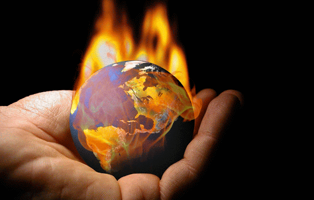

⚠️ Consecuencias
- Las temperaturas elevadas
- Tormentas intensas
- Aumento de sequía
- Biocombustibles a partir de residuos orgánicos
- Elevación del nivel del mar
- Perdidas de especies
- Escases de alimentos
- Riesgos para la salud

Los gases de efecto invernadero tienen un impacto cada vez mayor en el día a día del mundo entero. Hacemos un recorrido por la ciencia para explicar qué es exactamente el calentamiento global y cuáles son sus consecuencias.
El cambio climático engloba es el aumento de las temperaturas medias, catástrofes naturales, los cambios en los hábitats de la fauna y la flora, la subida del nivel del mar y otros efectos, mientras que el calentamiento global son las consecuencias que generan la liberación de esos gases de efecto invernadero.